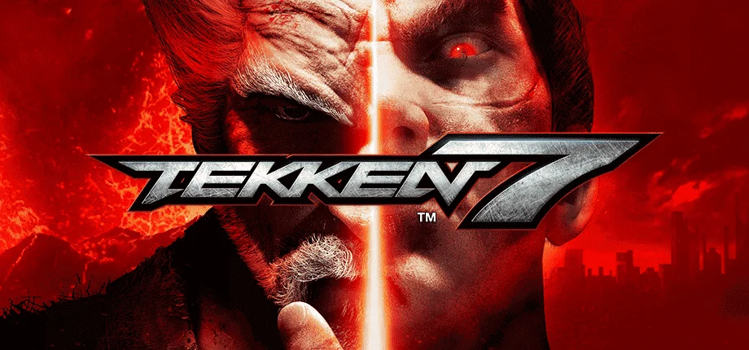

TEKKEN 7

철권(鉄拳/TEKKEN) 시리즈는 일본의 반다이 남코
(구 남코) 에서 제작하여
발매하는 3D 대전 격투 게임이다.
처음에는 세가의 버추어 파이터의
아류작이라는 평가를 받았으나,
이후 여러가지 독자적인 차별화 노선이 성공하여 고유의 가치를 인정받고 버추어 파이터를 완전히 뛰어넘어 3D 격투게임을 대표하는 타이틀로서 자리잡게 된다.
그리고 철권 7은 철권 태그 토너먼트 2에 이은 최신작이자 철권 시리즈 20주년 기념 작품이다.
캐릭터
3D 대전액션게임 중 캐릭터 볼륨이 압도적으로 높다.
태그 2 콘솔판에서는 플레이어블 캐릭터가 무려 59명에 달한다.
각 게임별로 1탄때부터 이미 철권만 캐릭터 수가 2배였는데,
이는 철권에서 캐릭터별 중간보스라는 전무후무한 시스템을 도입했기 때문이다.
이번 최신작 철권 7에는 총 51명의 플레이어블 캐릭터가 있는데, 그중 카스미, 마스터 레이븐, 샤힌을 비롯한 7 오리지널 캐릭터 11명과
기스 하워드, 고우키 등의 콜라보 캐릭터 4명 - 총 15명의 새로운
캐릭터를 선보였다 (엘리자는 외전인 레볼루션에서 처음 등장했다. 정규 넘버링 시리즈 참전이 7 FR).
계급
철권 7에는 색깔별로 총 11개의 단과 37개의 계급이 있다. 차례대로
숫자단,
액자단,
녹단,
노랑단,
주황단,
빨강단,
의자단,
파랑단,
보라단,
황금단,
그 위 (오메가)이다.